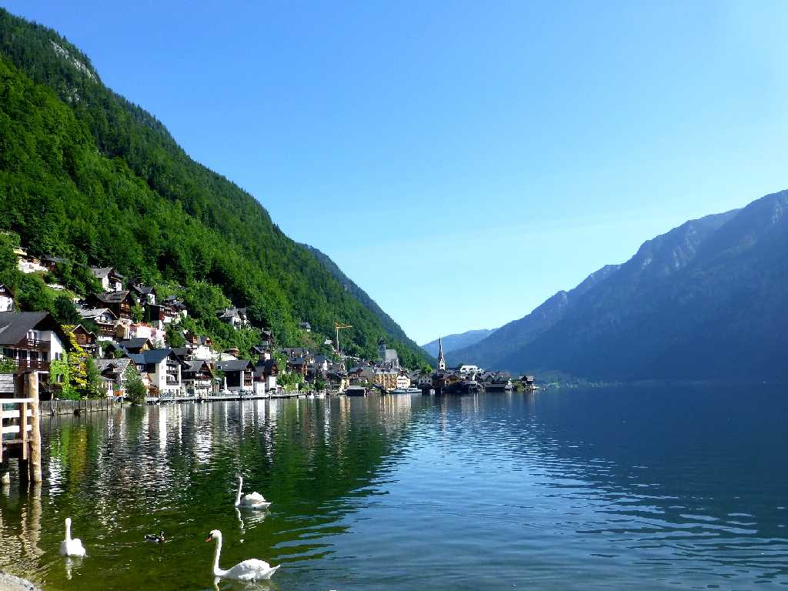
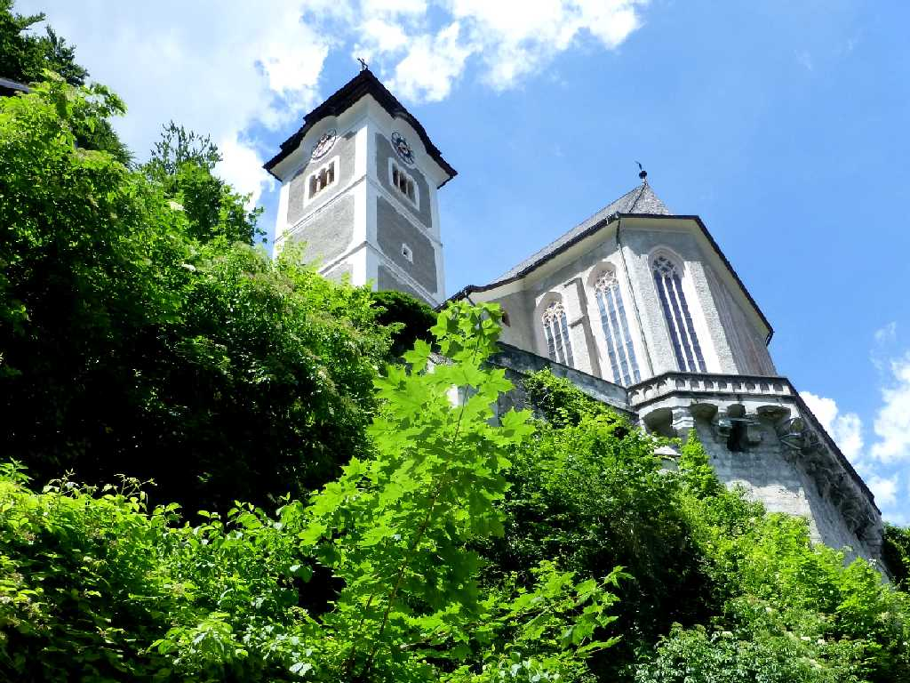
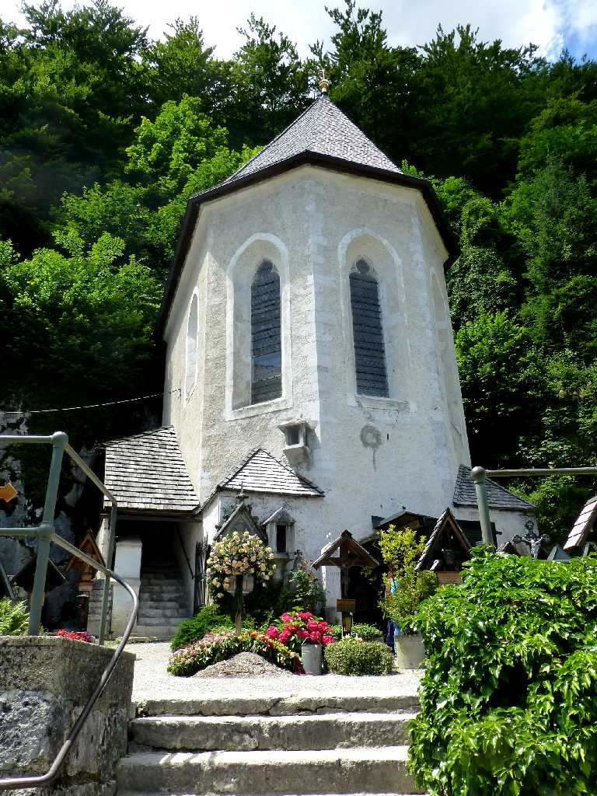
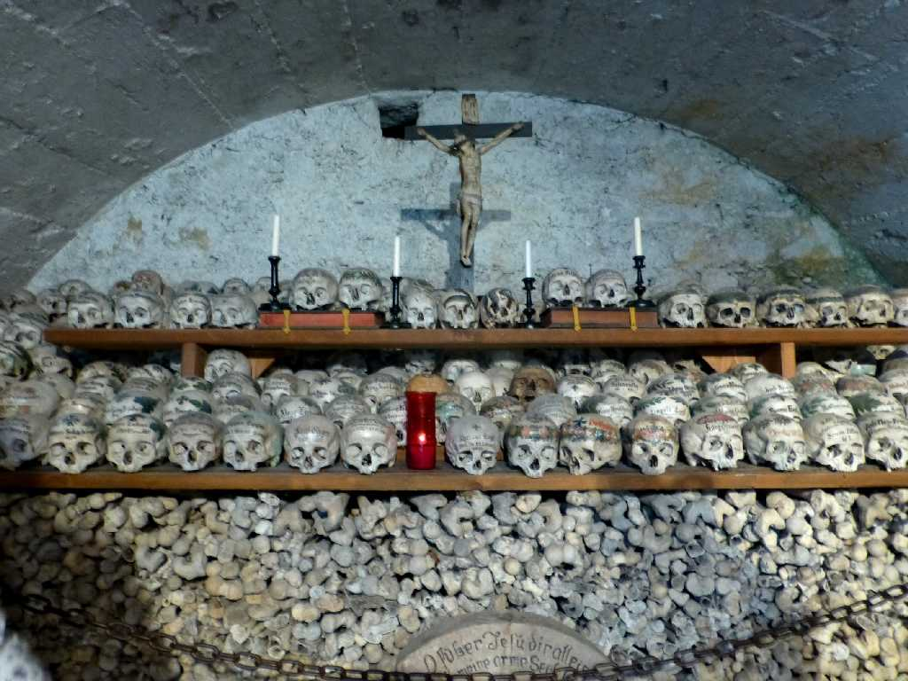
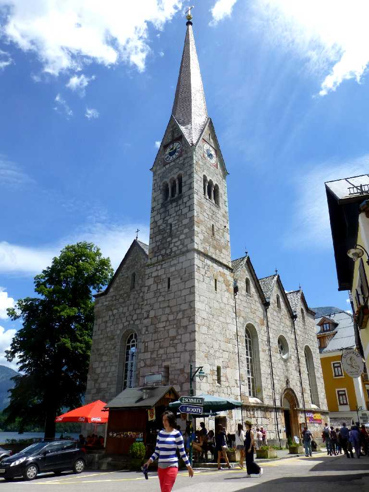
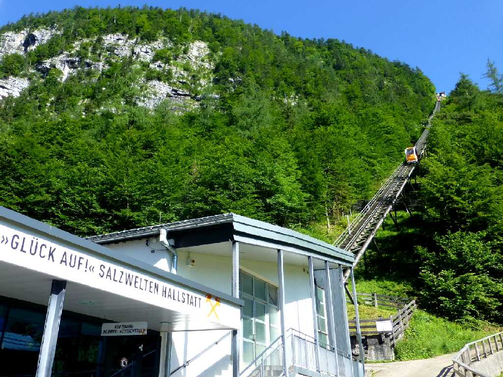
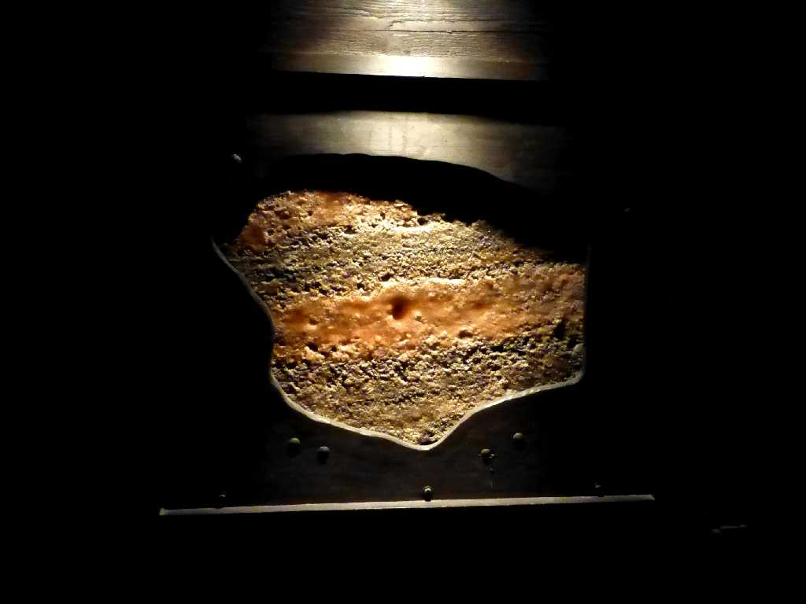
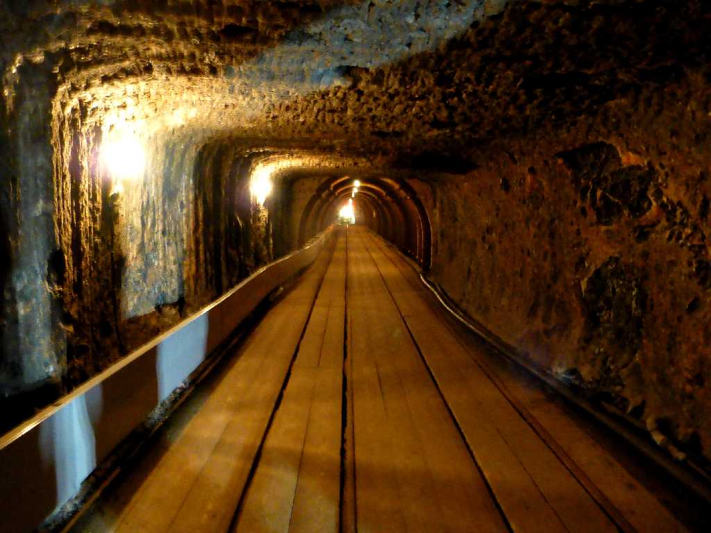
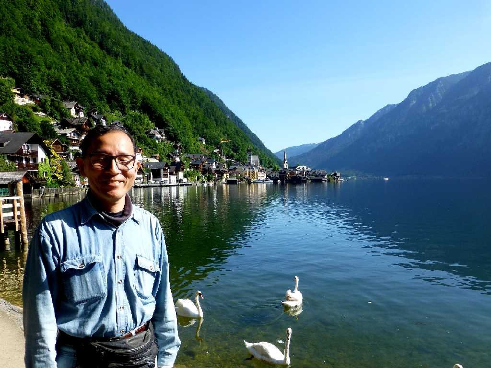

Hallstaettersee Hallstatt
オーストリアアルプスのダッハシュタイン山塊にあるハルシュタット湖畔の風光明媚な町

Katholische Kirche Hallstatt

Beinhaus Katholische Kirche

Beinhaus Katholische Kirche

Kirche Hallstatt

Seilbahn Salzwelten Hallstatt
古代ローマ以前から現在に至るまで岩塩が採掘されている現役の岩塩坑

Steinsalz Salzwelten
Hallはケルト語で塩を意味しStattはドイツ語で場所を意味する

Rutschbahn Salzwelten

June 25 2015 Hallstaettersee Hallstatt